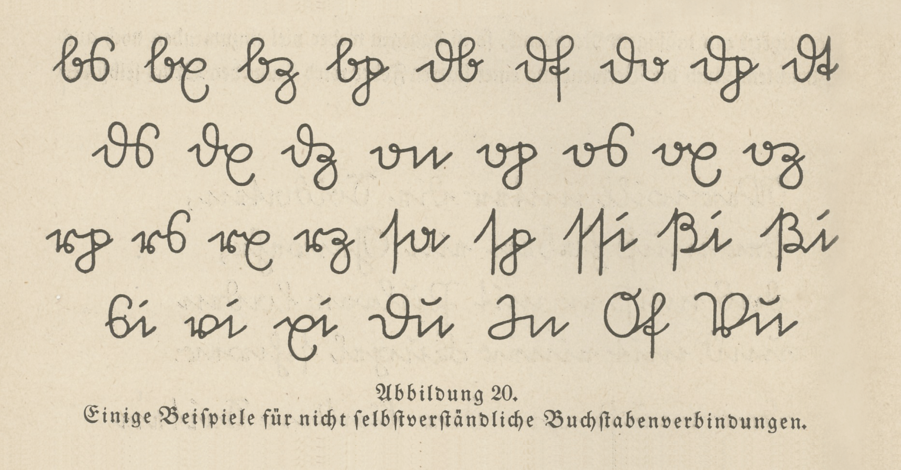

今天开场白应景说「特洛伊之战」，之前氛围渲染的不错了，最近风向也是憋着开打。作为「剧本」，作者编剧导演的能力，是我等观众鉴赏新时代中国特色社会主义文艺事业丰硕成果的保障。不过呢，这么早就「剧透」了，会有不识时务的唯恐天下不乱的好事者到处搅局吖。
注意，这些搅局者可不是「情商负无穷」的我，而我反而是从这些搅局动作当中体会到布热津斯基「奶头乐」理论与中国革命实践相结合所形成的有别于官方立场的「娱乐至死版伟大复兴事业」之魅力。
前面提到了，新世纪以来以「美利坚太祖高皇帝兼墨西哥摄政」的逗哔精神病自大狂「约书亚·亚伯拉罕·诺顿」为模板的自称「西肃慎代天启运后清诸上神圣千年上等开明大帝国太祖威武文圣德仁昭明高贤景匡弘皇帝」还叫嚣「讨厌的人都要死」的钦定文豪就已经粉墨登场，算是提前二十年发出「全垒打宣言」吧。
而对应斯巴达王后「海伦」的美女，候选并不多，不仅要长得漂亮，还得血统高贵，并且家世显赫，艳名远扬一段时间之后还得出轨，然后跟着大屌高富帅跑路，于是绿帽王勃然作色伙同全体希腊人远征捉奸。剧情眼下刚进行到「跑路」阶段，可能时事新闻当中还没来及体现。
于是，之前很多年都能看见好事者不停搅局，比如某文学站点上面的历史爱好者热衷于讨论我中华兲朝上国那发达的伦理学传统当中的「母仪天下」角色，包括但不限于武则天慈禧，以及前面提到的前秦苟太后契丹萧太后满清孛儿只斤太后。而文学爱好者则讨论各种架空作品当中的类似形象，包括但不限于《东周列国志》当中的夏姬，《论语》出现的南子。
今年以来的放风，前面提到了矛头指向「伊万卡·川普」的以三从四德路惠男帐号带节奏的一连串发言。而与此相关的则是「如果女儿是个人尽可夫的碧池咋办」引发的热烈讨论，其中包括某美术工作者扎堆站点应景提供的「贤婿捉奸图」：
 贤婿捉奸图
贤婿捉奸图
换句话说，这就是「娱乐至死版特洛伊之战」的开场动画。之前其它涉及下半身英特纳雄耐尔主义者无遮大会相关报道也不少。
那么，人民群众都知道这「女一号」婚前滥交婚后滥交，所谓被高富帅大屌拐跑不过是激化矛盾制造冲突增加剧情跌宕起伏程度用的俗套桥段，那么「男配」绿帽王的演技能达到炉火纯青内化于心外化于行的境界么？有气无力的号召人民群众为了自己下半身的名声而不懈奋斗，稍微有点难。一群「希腊人」帮闲会为了个婊子抛头颅洒热血前仆后继舍生忘死么？并且已经进了体制还不能撂挑子，还得在导演的催促下，硬着头皮肿着脸继续演下去。
就是说，「娱乐至死」是双刃剑，本来「众神」准备以虚无缥缈的名词为号召，全国总动员开打世界大战的，还要以有悖于社会主义精神文明建设的方式鼓舞干部队伍士气「化绿帽为力量」企图同仇敌忾，结果不知不觉就噗哧一声泄气了……国安民乐岂不美哉？
开场白结束，言归正传。
接下来伊凡和牧师的对话中，关于「比蒙」的定义，引发了宗教之间差别的话题。
在犹太教和基督教各流派所公认的《约伯记》当中，对于比蒙的描述是这样的：
“你去看看河马，我造了你，也造了它，它吃草如牛一样。你看，它的力量在腰间，它的能力在肚腹的肌肉上。它的尾巴弯下，好像雪松，它大腿的筋纠结在一起。它的骨头好像铜管，它的硬骨有如铁杖。它在上帝的作为中居首，只有造它的主能拿剑走近它。群山为它生出食物，野地的走兽都在它那里玩耍。它躺在枣莲下，卧在芦苇丛生的隐密处和沼泽里。枣莲荫庇它，溪旁的杨树环绕它。就算河水泛滥，它也不慌张逃跑，约旦河的水涨到它的口边，它还是泰然自若。谁能到它眼前捉拿它？谁能用钩穿透它的鼻子？”（《圣经·约伯记》第四十章十五到二十四节）。
除了尾巴如香柏树，这一描绘与河马都较符合，因而和合本的译者就直接以“河马”指称贝西摩斯。在威廉·布莱克所绘的《约伯记》插图中，贝西摩斯形状类似河马，嘴生獠牙，人耳狮尾。
而在东正教承认而天主教和新教不承认的「次经」《以斯拉续篇》当中，对于比蒙的描述是这样的：
“在第五日，汝对那七分之一有水聚集的部分说，应有动物、飞禽和鱼类：事儿就这么成了。对于毫无生命的死水依照神的诫命产生生命这件事，所有人都得赞颂您的伟绩。而后汝挑选两只动物，其一汝称作贝西摩斯，另一称作利维坦。并且将它们彼此分开：对那七分之一，即是，有水聚集的那部分，或许容它们不下。对于贝西摩斯汝给一部分，就是在第三天里被弄干的那部分，它就住在那里，那里有一千座山。而对于利维坦汝给那七分之一部分，即是，那潮湿之处；并命它吞噬汝所厌弃的，在恰当时候。”（《次经·以斯拉下》第6章第47至52节）
在目前各主要流派公认的「伪经」《以诺一书》当中，对于比蒙的描述是这样的：
“并且在那日两只怪兽被分开，雌的那一只叫利维坦，居住在海水喷涌如泉之处的深渊里；雄的那只叫贝西摩斯，藏身于一处隐蔽的、名为丹代恩的沙漠，那是在伊甸园之东。”（《以诺一书》第60章第7至8节）
然后「民间」（与教会相对）就有其它引申，有些是艺术角度的加工，有些是出于其它目的：
弥尔顿《失乐园》第七章中也有提及贝西摩斯，创造的时间改到了第六天。旧约解经书《米大示》称贝西摩斯为无敌无类的生物，只有耶和华的剑才能杀死它。那时候巨兽（贝西摩斯）和海魔（利维坦）将会大战，最后同归于尽，与巨鸟（席兹）一起成为圣洁者的食物。另有一种说法它们都将被投入深渊。
在犹太历四月夏至的时候，贝西摩斯的精神气力都达到一年的高峰。那时它会后足着地，怒吼嘶鸣，声震寰宇。虎豹豺狼受其威慑，全年都不敢肆意捕猎，许多弱小生物得以逃过一劫。
后世逐渐给贝西摩斯加上了恶魔的特性。法国恶魔学家亨利·布戈和俄国神秘学家海莲娜·波拉瓦斯基夫人都将它看作黑暗与邪恶的象征，撒旦的爪牙。巨兽的外形也逐渐变化。最常见的版本为腹滚肚圆，双足站立的大象，变体为鲸鱼、狗、狐狸、狼等等。它当了地狱的看守，也常主持盛大的宴会，在幽冥地府还以歌喉闻名。
绿教传统中，比蒙即巴哈姆特，阿拉伯文为（Bahīmūth）或（Bahamut），是承托陆地的怪物。在波斯，它则与赫哈由许等同。
贝西摩斯在神话学上的祖先，也许可以归到埃及的生产之神塔沃里特。她有着河马的头，狮子的腿足，鳄鱼的背和尾巴，其余部分则保留人形。
上面这几段引用，已经足够证明闪米特玄幻小说中的虚构形象在民间导致的思想混乱了也。但是，教会可不这么想，断章取义是神棍基本功，就是要模棱两可含糊不清的教义，才适合双重标准吃了原告吃被告。不管贱种屁民怎么狡辩，神棍都有充足理由将其打翻在地再踏上一只脚令其永世不得翻身。
正文中的「古登堡版」，指代的是用各种哥特黑体字印刷出版的内容，是德意志地区特有的字体，对于外国人来说有些难以辨认。贴个1901年欧洲出版界的字体版图：
1901年欧洲出版界字体版图
古登堡用的Fraktur字体，就是第一个自称「日耳曼尼亚国王」的「德意志民族神圣罗马帝国」皇帝「马克西米利安一世」在位时期设计的，印刷体是这样的：
Fraktur印刷体
衍生的手写体「Sütterlin」是这样的：
手写体Sütterlin字母

连写字母
连写字母
手写实例
手写实例
而天主教地区惯用的继承自罗马的Antiqua字体是这样的：
Antiqua字体
在德意志地区出版界，通常用哥特体印刷德文，而用Antiqua体印刷拉丁文法文之类外语：
 混合排版
混合排版
这当然有政治和意识形态因素。政治因素就是德意志民族特立独行，以实际行动与拉丁人划清界限，没有拜占庭这个竞争对手之后，拉丁人也无法伙同希腊人企图夺回正统了也。
意识形态因素就是因为本位面中世纪天主教会不允许屁民自己读圣经，只能听神棍讲解。而宗教改革的主要目标就是削弱教会的意识形态解释权，最简单的方式就是普及文字材料，鼓励人人都读经，不要被神棍忽悠。
所以，各种新教「更正宗」的圣经篇幅最小，天主教包括了一些次经，东正教包括了更多次经。注意，被犹太教排除的部分经典，被基督教当作正经或次经收录，包括以斯拉续篇，这也体现了「有经之人」的立场各不相同。
在牧师和伊凡的对话当中，也体现了作为一个神棍关心人民群众是否「日五省自身」：
今天有没有在思想上高度信赖、感情上衷心爱戴、政治上坚决维护、组织上自觉服从、行动上始终紧跟？